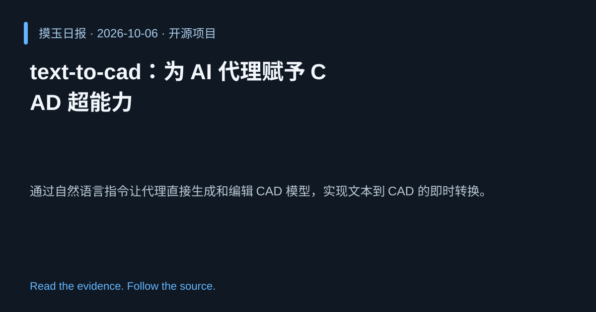

2026-10-06 · Asia/Shanghai · 开源项目 · #2
text-to-cad：为 AI 代理赋予 CAD 超能力
earthtojake/text-to-cad
通过自然语言指令让代理直接生成和编辑 CAD 模型，实现文本到 CAD 的即时转换。
为什么值得关注
降低专业绘图门槛，让 AI 能在工程设计环节直接参与，提高创作效率。
- 支持从文字描述自动创建 CAD 零件和装配体。
- 基于 Python，易于集成到现有 AI 代理工作流。

热度 57.6 / 100；排名与评分保留该期记录。